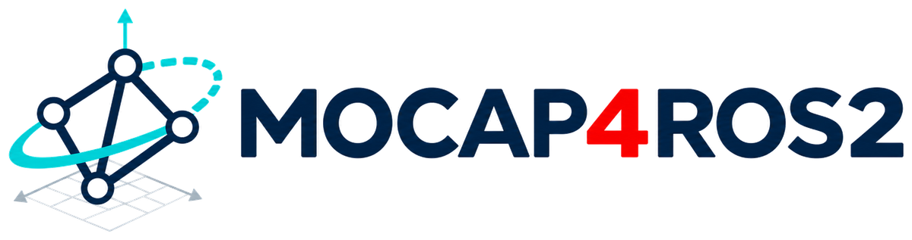

MOCAP4ROS2#


Motion capture for ROS 2: one interface for OptiTrack, Vicon, Qualisys and Gazebo, and tools that work with all of them — ground truth for robots, human motion analysis, recording and monitoring.
OptiTrack (official NatNet SDK or open implementation), Vicon DataStream 1.13, Qualisys QTM, plus a simulated system and a Gazebo plugin.
Markers, rigid bodies and skeletons with tracking validity, stable ids and one frame convention, whatever the system.
A TF tree parallel to your robot’s, body calibration, map alignment and online ATE/RPE with export for evo.
Skeletons as TF and joint angles, zero-phase filtering, gap filling and C3D export for biomechanics software.
ros2 mocap4r2 lists, starts, stops, records and diagnoses every system;
the TUI shows rates, latency and tracking live.
A driver only translates its system into the MOCAP4ROS2 interfaces: every tool works with it from the first frame.